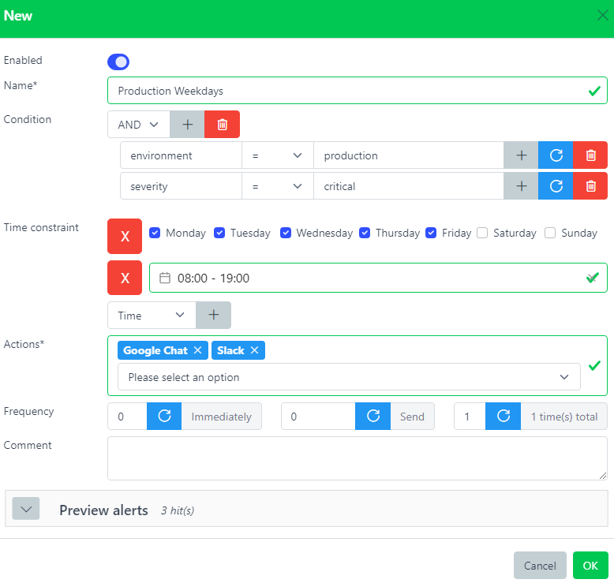

Notifications
Contents
Notifications#

Architecture - Notifications plugin#
Call a list of Actions which are alerting scripts.
Alerts have to match the Notification’s condition and time constraint in order to being processed.
Notification is the only component relying on another one. Indeed, at least one Action has to be created first before being able to use it.
host: prod-syslog01.example.com
rules: ['is_production']
time_constraint: {}
environment: production
name: alert_production
condition: environment = production
time_constraint: {}
actions: ['sendmail_all'] # Assumes this action already exists
host: prod-syslog01.example.com
rules: ['is_production']
environment: production
notifications: ['alert_production']
The Alert matched the notification’s condition and time constraint (it was empty), therefore the action sendmail_all will be called.
Any Alert matching a notification will have a new field notifications added with the list of matched notifications.
Web interface#
- Name*
Name of the notification.
- Condition
This rule will be triggered only if this condition is matched. Leave it blank to always match.
- Time Constraint
Time constraint during this notification will be active.
- Actions
List of actions to execute. At least one action needs to be created beforehand.
- Frequency
Keep sending notifications. If acknowledged or closed, no more notification will be sent.
- Comment
Description.
Frequency#
This parameter controls how many times this notification should be triggered and at which interval. It has 3 subparameters:
- delay (
0) Time in seconds to wait before triggering this notification the first time.
- every (
0) Time in seconds until the next notification trigger.
- total (
1) Number of total notifications sent (-1 means indefinitely)
By default a notification is immediately executed only once.
It an alert that triggered this notification gets acknowledged or closed before the notification is sent, no more will be sent.
delay (10) every (60) total (4)
# Sends a notification after 10s
# then keep sending a notification every 60s
# until 4 notifications have been sent in total
delay (0) every (10) total (-1)
# Sends a notification immediately
# then keep sending a notification every 10s
# indefinitely (will stop if someone acknowledges the alert)